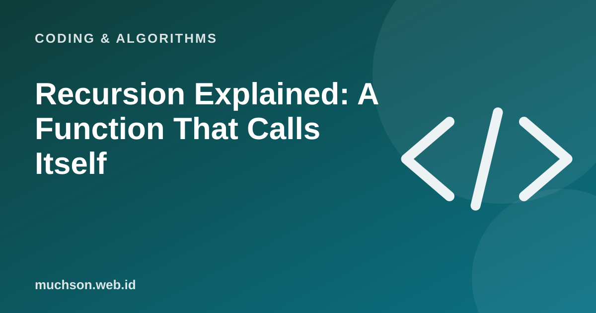

Home › Articles › Coding & Algorithms
Coding & AlgorithmsRecursion Explained: A Function That Calls Itself
Recursion often feels like magic until you see its structure: a function breaks a problem into a smaller version of itself, until the problem is small enough to answer directly. Then the answers are assembled back up.

Two mandatory parts
Text description of the diagram
- Base case: a direct answer, without calling itself
- Recursive case: call itself with a smaller problem
- Combine: build the answer from the call results
The most classic example: factorial
def factorial(n):
if n <= 1: # base case
return 1
return n * factorial(n - 1) # recursive case
print(factorial(5)) # 120For factorial(3): 3 × factorial(2) = 3 × (2 × factorial(1)) = 3 × (2 × 1) = 6. The computer piles each call onto the call stack, then finishes them from the innermost one.
Fibonacci: recursion that wastes work
The Fibonacci numbers: each number is the sum of the two before it. The direct recursive version is very elegant, but it computes the same thing over and over.
def fib(n):
if n <= 1:
return n
return fib(n - 1) + fib(n - 2)The fix: store results (memoization)
from functools import lru_cache
@lru_cache(maxsize=None)
def fib(n):
if n <= 1:
return n
return fib(n - 1) + fib(n - 2)
print(fib(50)) # fast, not billions of callsRecursion suits problems with a tree-like or nested structure: folders within folders, exploring a graph, divide and conquer. For simple repetition, for or while is usually clearer and saves memory.